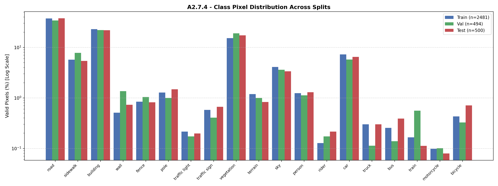
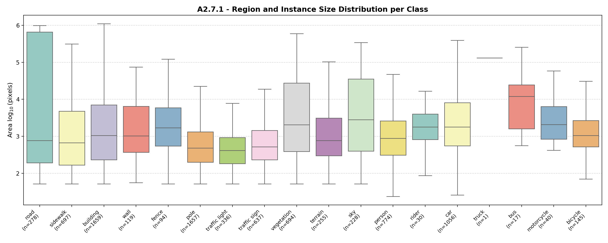
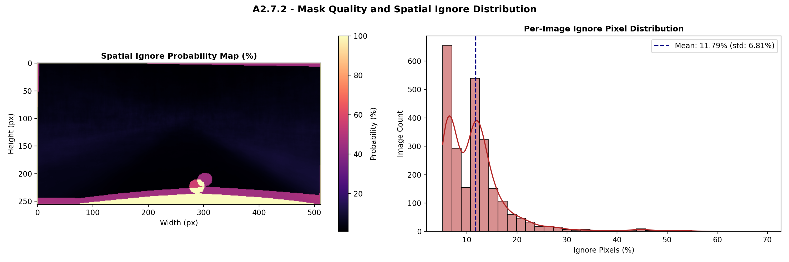
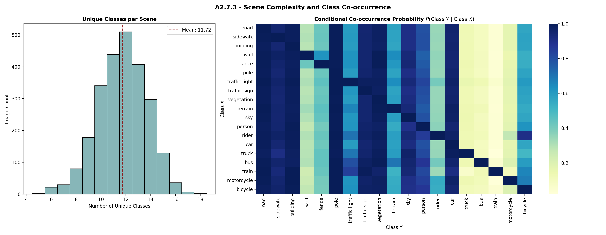
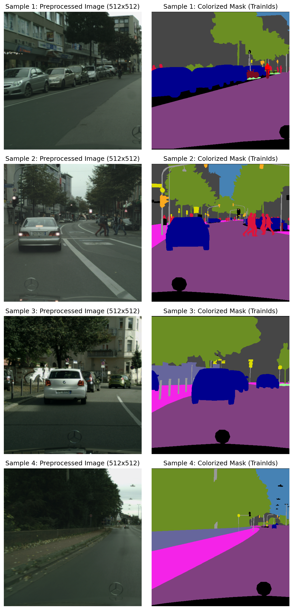
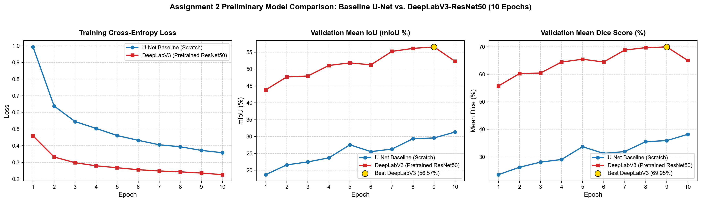

Assignment 2 — Milestone 2 (Draft)
1. Dataset & Split
- Dataset: Cityscapes (19 classes, ignore index 255).
- Split (City-level): Train: 2,481 images (14 cities) | Val: 494 images (4 cities) | Test: 500 images (3 cities).
2. Exploratory Data Analysis (EDA)
Class Pixel Distribution Across Splits

Region and Instance Size Distribution per Class

Mask Quality & Spatial Ignore Probability Map

Scene Complexity & Class Co-occurrence

Preprocessed Batch Example

3. Preliminary Model Comparison (10 Epochs)
| Model | Type | Train Loss | Val mIoU | Val Mean Dice | Val Pixel Acc |
|---|---|---|---|---|---|
| U-Net | Baseline (from scratch) | 0.3580 | 31.34% | 38.20% | 86.35% |
| DeepLabV3-ResNet50 | Pretrained (ImageNet backbone) | 0.2262 | 56.57% | 69.95% | 90.44% |
Convergence Trajectories

4. Quick Reproduction
# Train Baseline U-Net (10 epochs)
python -m src.train --config configs/unet_base.yaml
# Train Pretrained DeepLabV3 (10 epochs)
python -m src.train --config configs/deeplabv3.yaml
# Evaluate Checkpoint
python -m src.evaluate --config configs/deeplabv3.yaml --checkpoint checkpoints/deeplabv3/exp_1/best.pt --split val5. AI Usage Disclosure
AI tools (Gemini 3.8 Flash) were used for batch size debugging (addressing single-sample BatchNorm in ASPPPooling) and plotting scripts. Details are logged in AI_USAGE.md.